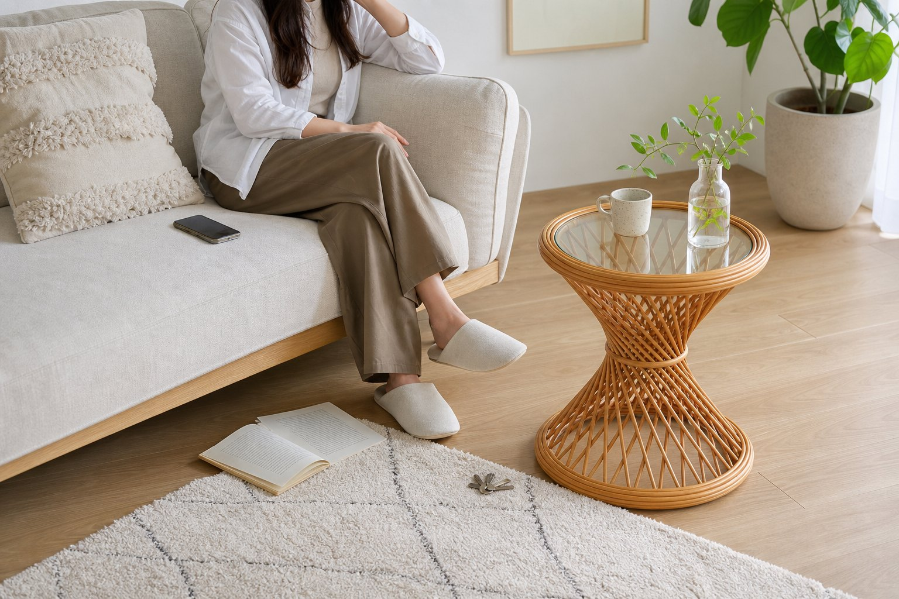
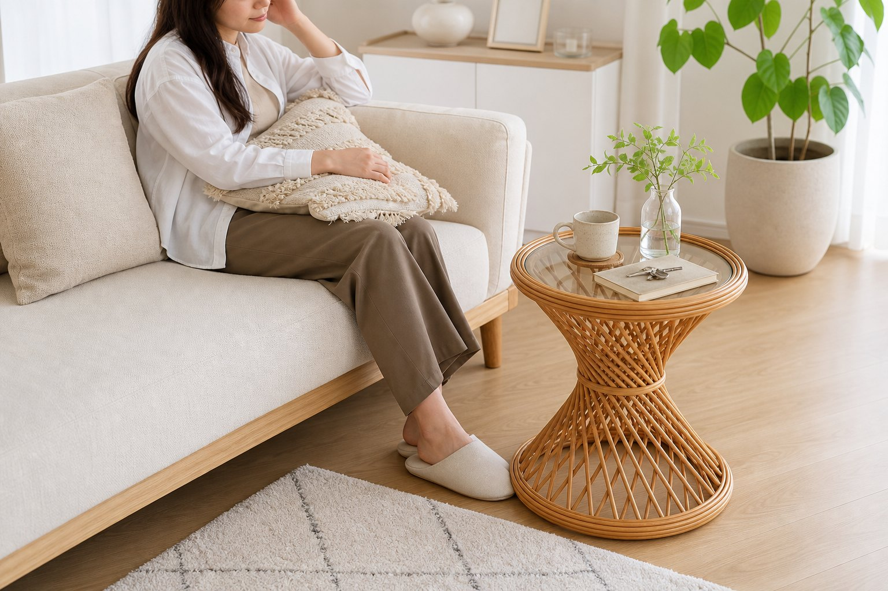
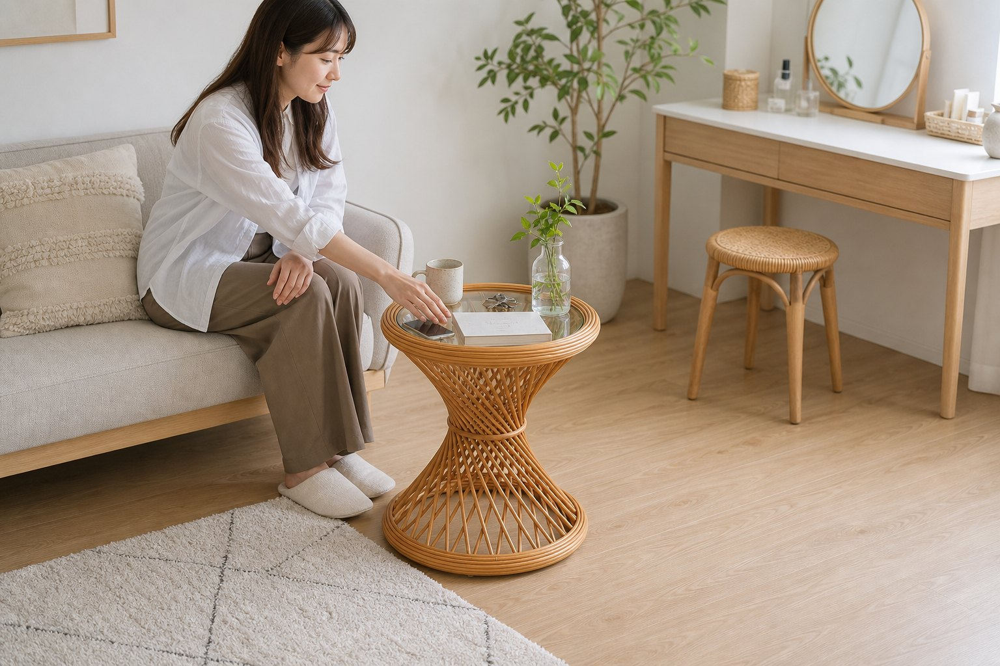

Small Friction
きっかけは、いつも“小物の置き場”。
部屋は片づいているのに、スマホ、読みかけの本、マグカップの置き場が定まらない。そんな小さな散らかりは、写真に写る一角や帰宅後の気分に意外と出ます。

After
ラタン調サイドテーブルがあるだけで、その一角が『整って見える』。
帰宅して鍵を置く、夜にドリンクを置く。動作の受け皿が決まると散らかりが自然に減り、ソファ横やベッド横まで落ち着いて見えます。

Why it fits
このラタン調サイドテーブルが、暮らしに効く3つの理由。
-
置き場所が決まる
ソファ横やベッドサイドに置くだけで、置き場の迷子を減らせる
-
軽い質感
ラタン調の軽さで、北欧・韓国インテリアの雰囲気に合わせやすい
-
使い道が広い
読書、メイク前の一時置き、夜のドリンク置きまで使い道が広い

Rakuten Check
価格・在庫は、楽天で要確認。
価格、レビュー、配送条件、在庫はショップ側で変わります。購入前に楽天の商品ページで最新情報を確認してください。
価格
¥9,600 / 楽天で要確認
レビュー
5.0 / 2件
ショップ
アジア工房
確認先
楽天市場
Scene
こんな場面で、ちゃんと使える。
使うシーン
- 休日にソファで本や動画を楽しむ時間
- ベッド横にライトや香りものを置きたい夜
- 部屋の写真を撮ったとき、生活感を少し抑えたい一角
印象の残り方
こういう小さな家具が自然に使われている部屋は、無理に飾っていないのに暮らしのセンスが伝わります。来客の視線が止まる一角にも、余白の作り方が残ります。
Product Images
写真で質感を確認する。


Before you buy
迷いやすいところだけ、先に確認。
大きすぎませんか？
幅45cm前後のサイドテーブルなので、主役家具というより余白を整える補助役として見やすいサイズ感です。
どんな部屋に合いますか？
白、ベージュ、ウッド、観葉植物がある部屋と相性がよく、淡いインテリアに寄せたい人に向いています。
Final Check
気になったら、在庫があるうちに。
部屋の余白を整える、軽やかな小さめテーブル。 価格・レビュー・在庫は楽天で要確認です。気になった今、楽天の最新情報だけ確認しておくのがおすすめです。
楽天で詳細を見る